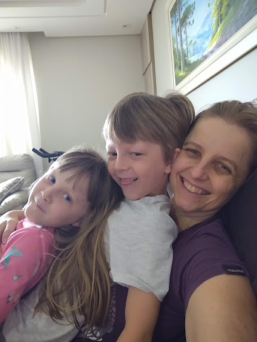
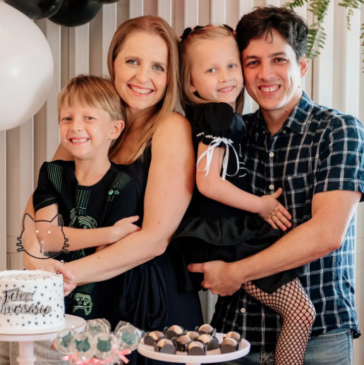

The short story
I am datavis / web developer / tech lead of a small, experimental data & communication unit at the Brazilian Treasury. I do some freelancing work occasionally. I recently taught my first class ("Web Programming") in a Data Journalism graduate program, and it was a blast.
The longer story
I loved art when I was a kid, I loved to read and learn, I was interested in almost every subject so it was really hard for me to choose a subject at university.
For some reason that eludes me now, I ended up choosing Electronics Engineering (but I did enjoy it! specially the mindset of viewing everything as models and abstraction layers). I should say that my interest in many different subjects did not subside — ever since graduation I've considered masters in Nuclear Engineering, Literature, Design, Economics, Mathematics, Statistics, History, Computer Science, Astronomy...
Then (for very pragmatic reasons) I went to work at the Brazilian Treasury, some 16 years ago. I ended up working with things like public finance, accounting, financial reporting, BI. I like to solve problems, and there were plenty of them there, so I liked my job. My background in engineering also made me help bridge the gap between the IT department and the core business teams.
I had attained a comfortable middle-level management position, well placed for senior management positions within the Ministry of Finance and other ministries. But I was somewhat restless. Being responsible for reports that dealt with how the government spends society's money, I was very unsatisfied with their format, language and reach. Very important issues and reforms in the Brazilian State were being discussed, but most of the population couldn't understand the numbers and technicalities. At the same time, I felt that the abundant data we generated daily in the government was not being translated into better decisions or policies that could effectively improve people's lives.
At some point, I found out that there was this thing called "data visualization", and my eyes shone with the possibilities of coming back to some of my passions and spending my work hours dealing with math, charts, design, coding, art, communication, cognition, perception, statistics, different domain subjects, data...and use it all to explain hard, boring financial topics to a larger audience, or to help business teams understand their own data and make better decisions based on it.
About 4 years ago, the Treasury created this small data & communication unit to do exactly that, I was lucky enough to be apointed its technical leader and to work with a crack team. I've been diving in these subjects and learning like crazy, and having a lot of fun, much more fun than I thought it was possible to have at work.
This journey also made me get close to communities that I admire, such as data journalists and social organizations, with whom I eventually had the opportunity to work, on my spare (or should I say "sleep"?) time, in award-winning data visualization and data journalism projects.
Two texts from the great Moritz Stefaner have inspired me greatly along the way.
One is "There be dragons: dataviz in the industry", where Moritz points that, in corporate settings, dataviz tends to fall into two major categories, in what he calls "number decoration" and the "data explorer". I show his main points in virtually every presentation I make to introduce my philosophy for new business teams when we are starting a new project.
The other is "Worlds, not stories". In the text, Moritz remembers Joel de Rosnay's work in 1979, where he described a futuristic device: the Macroscope. Just like we have the telescope for the infinitely great and the microscope for the infinitely small, a device called macroscope could allow us to investigate the infinitely complex: society, nature. Moritz then goes on describing how data science and data visualization can provide us new "glasses" to see and understand the world (although he also warns and remembers us that no world-spectating device is a neutral technology
).
And, of course, my greatest, everyday inspiration:
 ♥